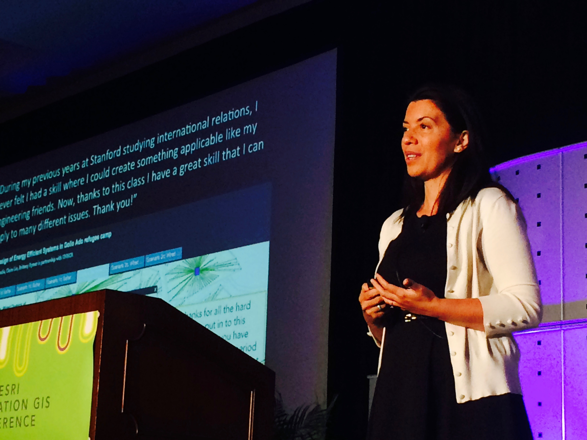
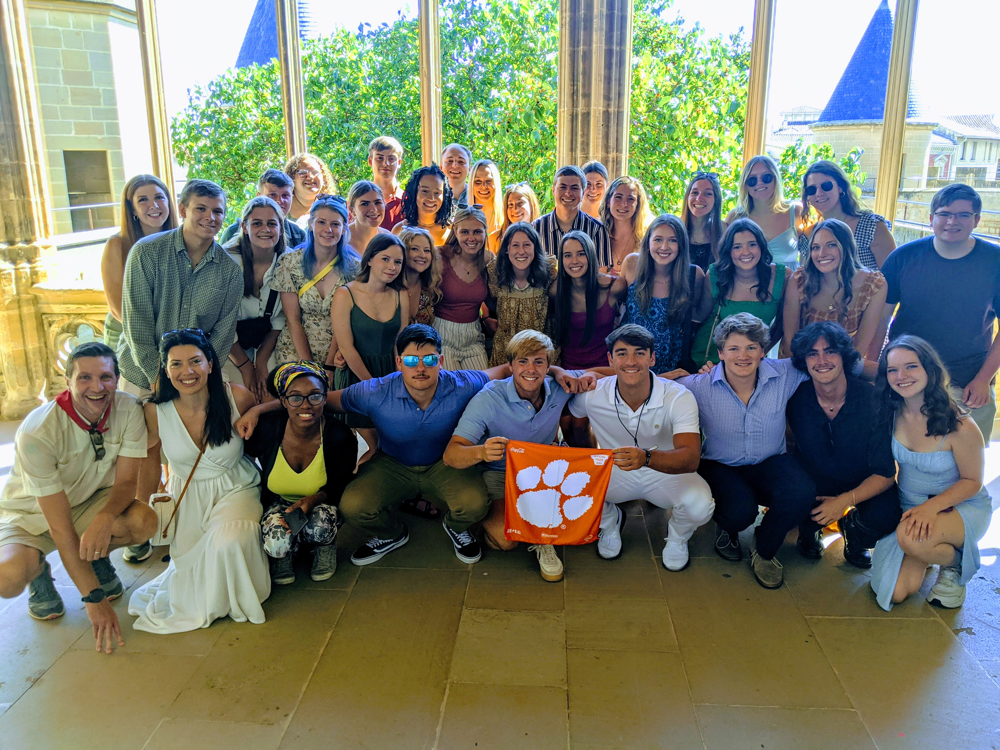

Geospatial leadership | AI-ready GIS | GIS for good
Geo-Enabling Future Generations
Dr. Patricia Carbajales-Dale | Executive Director, Clemson Center for Geospatial Technologies
Advancing spatial methods, GeoAI, and interdisciplinary partnerships to help universities, communities, governments, nonprofits, and industry solve complex societal challenges.
About
Spatial Insight for Societal Good
Dr. Patricia Carbajales-Dale leads Clemson's Center for Geospatial Technologies with a rare blend of technical depth, institutional strategy, and community-minded purpose. Her work helps researchers and students turn spatial data into decisions, from public health and disaster response to environmental systems, social determinants of health, and education.
A native of Spain, she brings an international perspective to geospatial education and collaboration. Her academic background spans Forestry Engineering, Geographic Information Systems, and International Family and Community Studies, grounding her work in both advanced spatial technology and the lived realities of vulnerable populations.
Download CVTranslates GeoAI, cloud platforms, remote sensing, and spatial analytics into usable opportunities for researchers, students, and partners.
Connects faculty, students, agencies, nonprofits, industry, and community partners around decision-ready geospatial workflows.
Keeps vulnerable populations, access, resilience, and public benefit at the center of technical work.
Leadership Focus
A geospatial center built for the next era
Dr. Carbajales-Dale's leadership connects campus-wide service, research cyberinfrastructure, AI and machine-learning literacy, and cross-sector partnerships.
Research and Impact
GIS that strengthens decision-making for vulnerable communities
Experience
Two decades of geospatial leadership across institutions
Publications
Manuscripts, reports, and GIScience contributions
Grants and Honors
Funded research, national recognition, and professional service
A sponsored research portfolio that links public health, cyberinfrastructure, forensic science, water resources, environmental systems, and geospatial workforce development.
Teaching and Speaking
Making spatial thinking accessible across disciplines
International geospatial leadership in practice
Dr. Carbajales-Dale is an experienced speaker, moderator, and educator whose work helps audiences connect geospatial technologies with practical decision-making, collaboration, and social impact.



Collaboration
A partner for complex problems that do not fit one discipline
Dr. Carbajales-Dale is especially effective at translating across disciplines, technical teams, community needs, and institutional priorities. Her work brings geospatial technologies into conversation with public health, social science, emergency response, planning, libraries, data science, environmental systems, government, nonprofits, and industry.
Featured Media